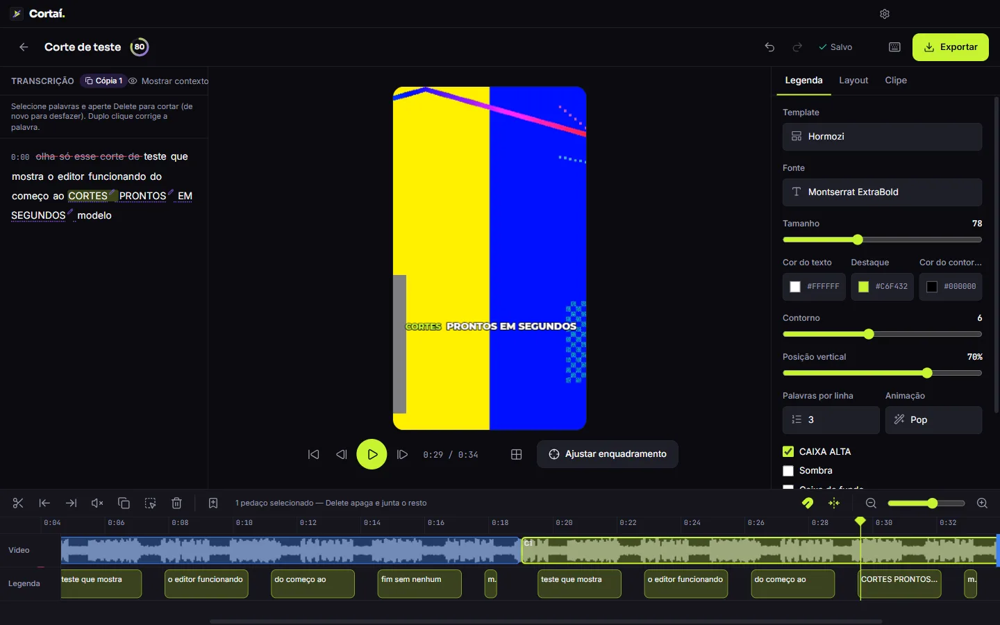
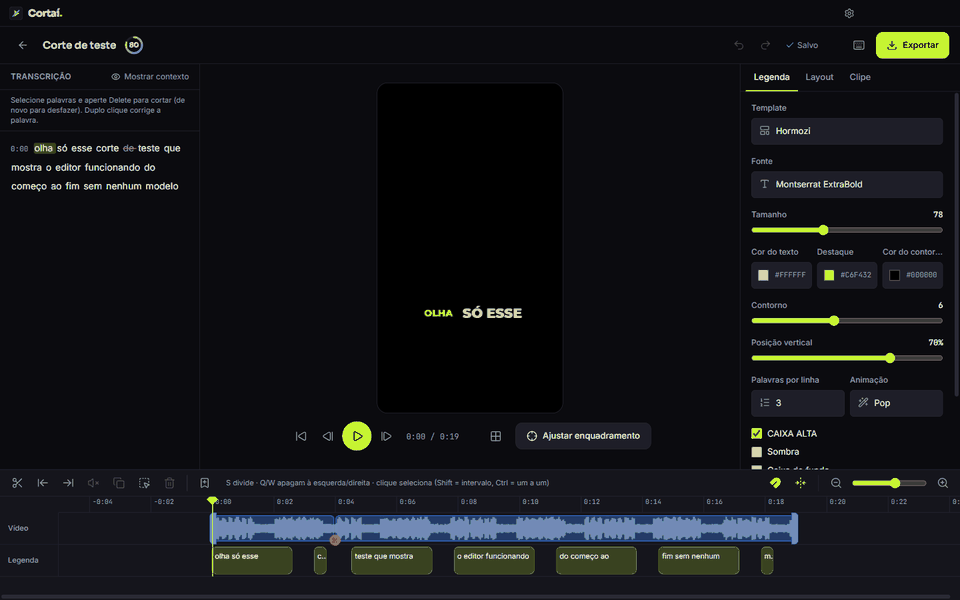

Seus vídeos longos viram cortes virais
O Cortaí acha os melhores momentos, enquadra no rosto e coloca legenda animada. Tudo no seu computador: nada vai para a nuvem e não tem mensalidade.
Windows 10 ou 11 (64 bits) · instalador com botões de avançar, sem terminal

Como funciona
Do vídeo bruto aos cortes prontos para postar, em três passos.
Importe o vídeo
Arraste um arquivo ou cole o link de um vídeo seu: aula, podcast, live ou entrevista.
A IA encontra os momentos
Ela transcreve a fala, escolhe os trechos com mais chance de prender a atenção e dá uma nota a cada um.
Ajuste e exporte
Revise no editor, mude a legenda e o enquadramento e exporte em MP4 vertical, pronto para Reels, TikTok e Shorts.
Tudo o que um corte precisa
Sem marca d’água e sem limite de vídeos.
Momentos virais por IA
Uma IA que roda no seu PC lê a transcrição e sugere os melhores trechos, com gancho, valor e final.
Enquadramento no rosto
O vídeo deitado vira vertical seguindo quem fala. Ajuste à mão quando quiser.
Legendas animadas
9 estilos prontos ou os seus, com a palavra falada em destaque. Brand kits por cliente: logo, cores, fontes e chamada final.
Edite pelo texto
Apague uma frase na transcrição e ela some do vídeo.
Linha do tempo completa
Divida, apague, silencie e marque trechos. O resto se junta sozinho.
Cópias independentes
Duplique um trecho e edite cada cópia como um vídeo à parte: legenda, enquadramento e cortes próprios.

Veja em ação
- Duplicar com Ctrl+D: a cópia entra logo depois do original.
- Prévia igual ao export: o que você vê é o que sai no MP4.
- Legenda editável na prévia: duplo clique, digite, Enter.
Requisitos
O instalador tem cerca de 110 MB. Na primeira vez, o próprio Cortaí baixa o que falta e mostra cada item como pronto ou faltando.
Seu computador
- Sistema
- Windows 10 ou 11, 64 bits
- Memória
- 8 GB (16 GB recomendado)
- Placa de vídeo
- NVIDIA com 6 GB ou mais deixa tudo bem mais rápido. Sem ela, funciona pelo processador.
- Espaço
- De 6 a 16 GB, conforme o perfil escolhido
Seus vídeos não saem do seu PC
Transcrição, IA e exportação rodam no seu computador. A internet só é usada para baixar os componentes na primeira vez e quando você importa um vídeo por link.
Dúvidas frequentes
É grátis mesmo?
Sim. Não tem plano pago, mensalidade nem limite de vídeos. A IA roda no seu computador, então não existe custo por uso.
O Windows mostrou “O Windows protegeu o computador”. E agora?
O aviso aparece porque o instalador ainda não tem certificado digital pago. Clique em “Mais informações” e depois em “Executar assim mesmo”. O código é aberto e pode ser conferido por qualquer pessoa.
Preciso saber programar?
Não. Você instala com o assistente e o Cortaí cuida do resto: confere o que falta, baixa e configura sozinho. Nenhum terminal.
Funciona sem placa de vídeo?
Funciona. O assistente detecta o seu computador e recomenda o perfil Leve, que usa modelos menores. Só demora mais para processar.
Ele se atualiza sozinho?
Sim. Quando sai uma versão nova, ela é baixada em segundo plano e aparece um botão para reiniciar e atualizar. Se preferir, ela entra sozinha quando você fechar o app.
Posso usar vídeo de outras pessoas?
Use conteúdo seu ou que você tem direito de usar. A importação por link foi pensada para os seus próprios vídeos.